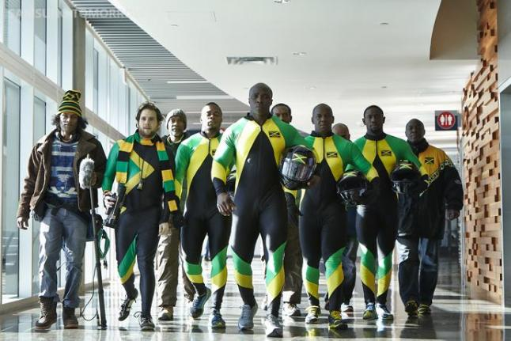

Our company was based off a movie, "Cool Runnings", a movie about the Jamaican bobsled team. We took the title of the movie and wanted to show people in Seattle a variety of routes to help them be more motivated to get out. This website shows users the different inclines, routes, distances, and locations around Seattle.
